I scanned the Mcdonalds Hamburglar character for my NeRF scene. Here are two screenshots of the camera frustums in Viser.
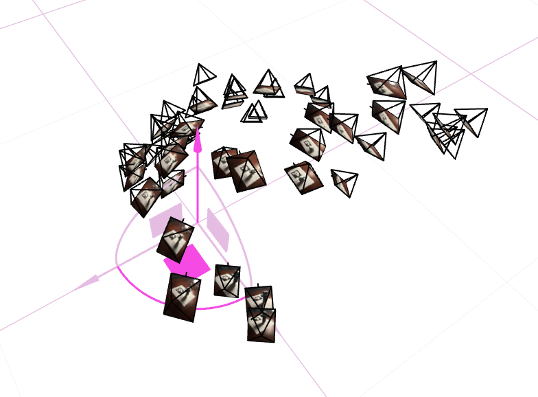
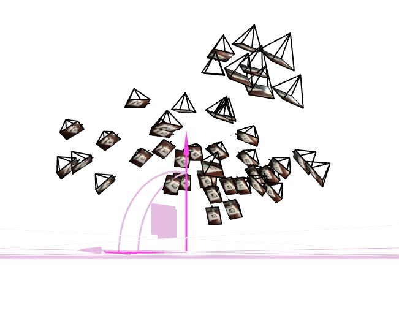
I implement Neural Radiance Fields (NeRFs) to create 3D scenes from 2D images taken from various positions. This project explores the intersection of computer vision, deep learning, and 3D graphics to reconstruct photorealistic scenes using neural networks.
As a precursor to training a NeRF proper, I first fit models to 2D images. I fit a model to both the required fox image and also this anthropomorphic peach.

My model architecture is as follows:
It is a simple MLP with 2 hidden layers of 64 units each. The output layer is a linear layer with 3 units and a sigmoid activation function to ensure the output is between 0 and 1. Positional encoding is added to make the model more robust to high-frequency changes.
I use a learning rate of 0.01, a batch size of 10000, and train for 1000 epochs. I made a version that used a torch-style dataloader, but found that this was making training unnecessarily slow, so I ended up just keeping the whole training image on the GPU.
Here are the training progressions for both the fox and peach images (each with L = 10 and W = 64):
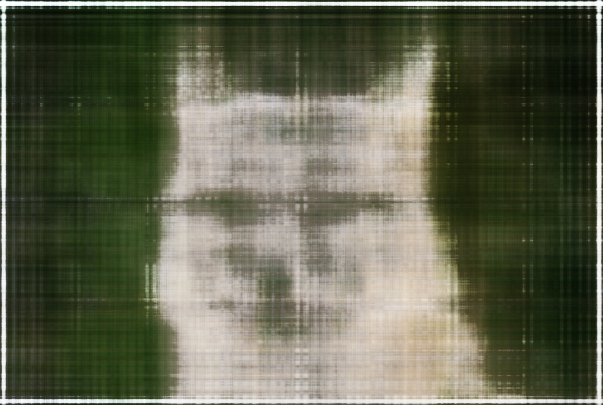
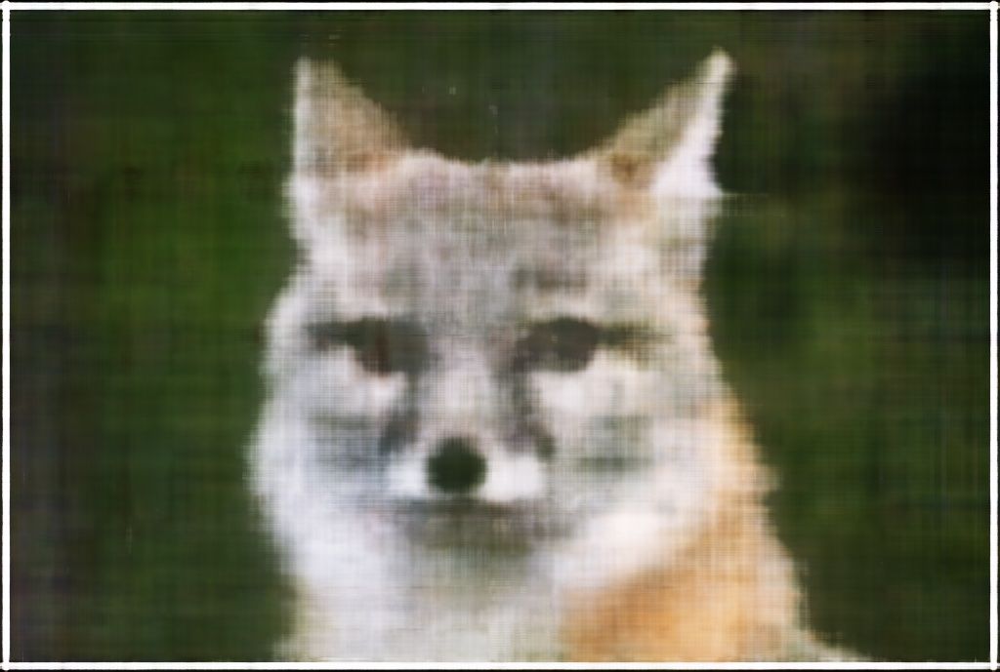
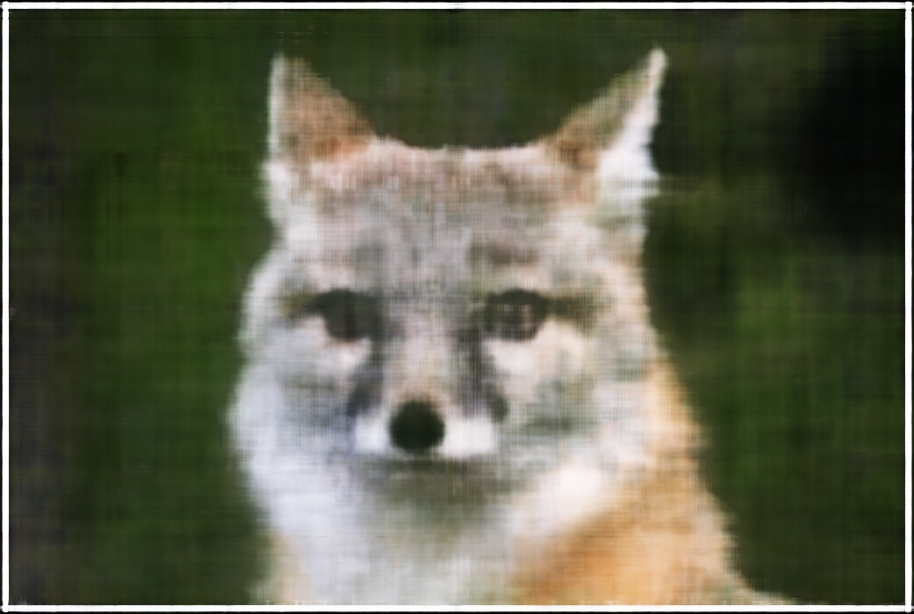
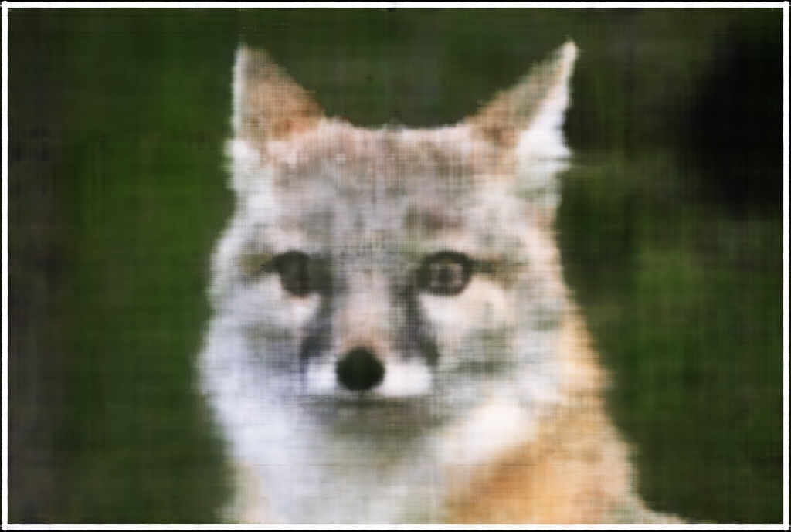
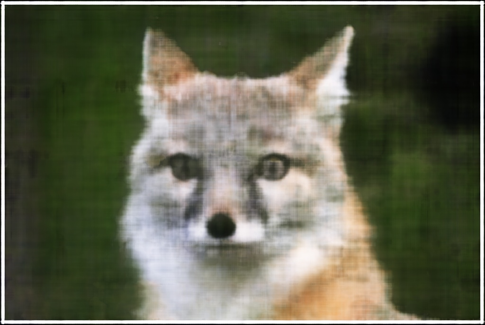
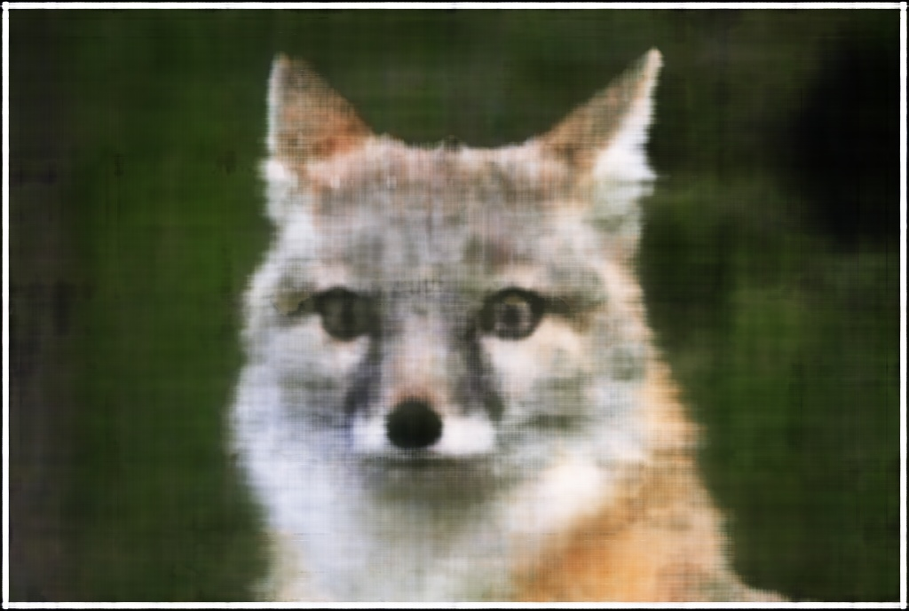
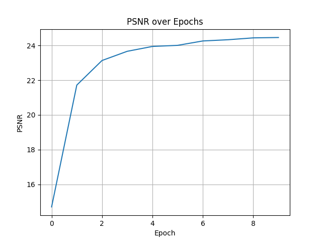
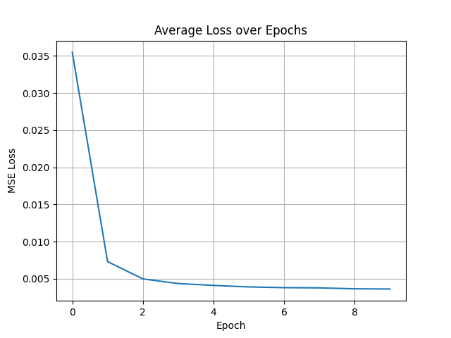
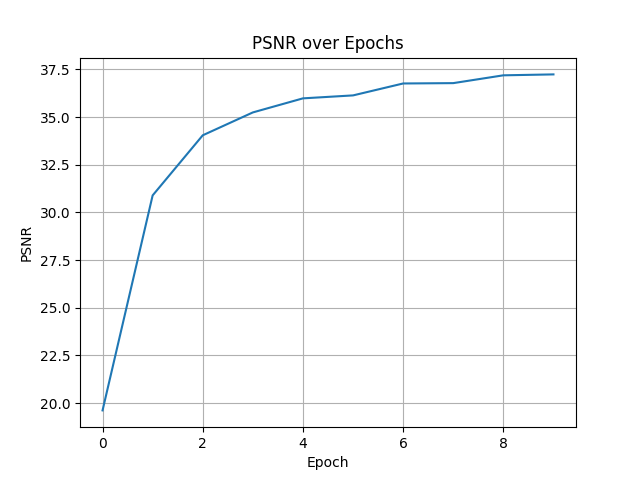
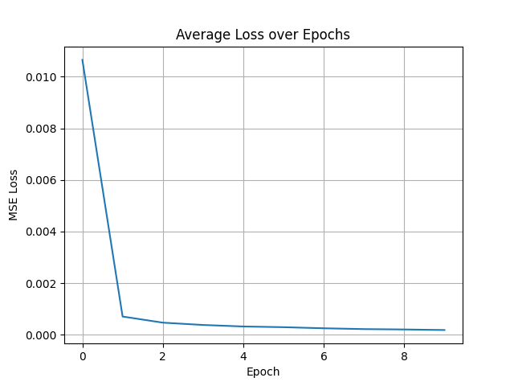
Here are some comparisons of what adjusting the degree of the positional encoding (L) and the layer width (W) does.
|
|
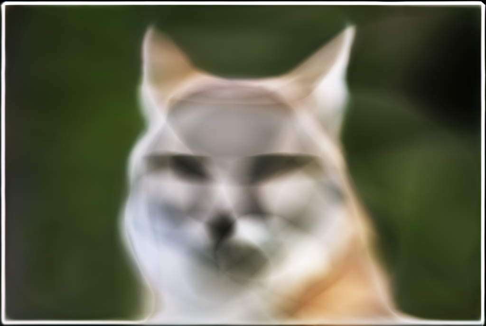 |
|
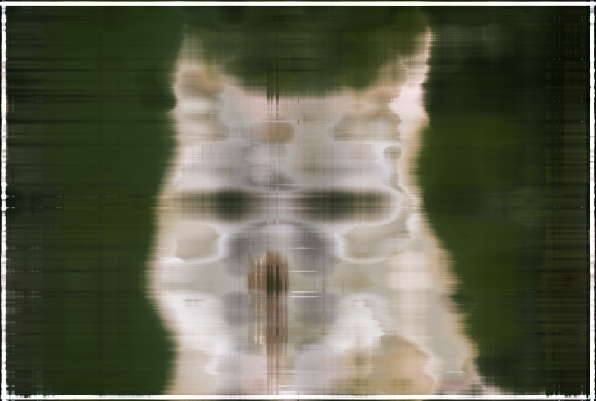 |
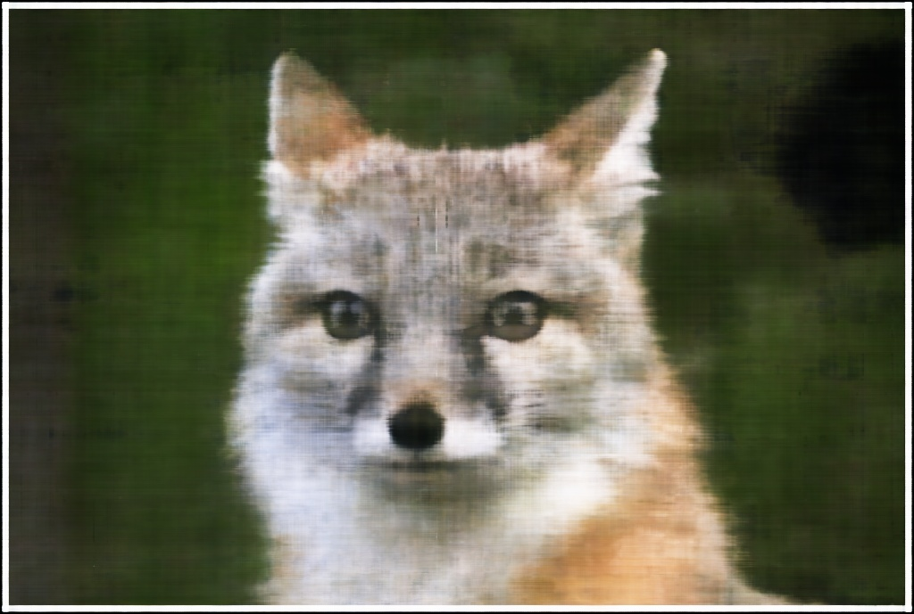 |
|
|
|
|
|
|
Observe that small values of L lead to only low frequencies being captured. Small values of W cause strange line artifacts.
I implement three functions using batched torch operations: transform(c2w, x_c),
pixel_to_camera(K, uv, s),
and pixel_to_ray(K, c2w, uv)
transform(c2w, x_c) is implemented using a simple conversion of x_cto homogeneous coordinates, a matrix multiplication, and a conversion from homogeneous coordinates.
pixel_to_camera(K, uv, s) is implemented by converting pixel coordinates to homogeneous coordinates and applying the inverse of the intrinsics matrix K.
pixel_to_ray(K, c2w, uv) is implemented by using the second function to get the camera coordinates of the pixel, and then using the first function to convert them to world coordinates. I construct the ray via vector subtraction on the world coordinates and the camera coordinates, making sure to normalize the direction vector.
To determine the color of a pixel, we need to sample the camera ray that corresponds to the pixel. The final color is determined by sampling along this ray and aggregating the samples using the discrete approximation of the volume rendering equation, which I implement later. I simply use the linspace function to get n evenly spaced samples, and add some noise during training to prevent overfitting.
I made a custom dataloader not following torch conventions. It has one function sample_rays(self, n) that samples n random pixels from across the dataset and their corresponding rays.
I followed the provided diagram's architecture for the NeRF model. I made a separate NeRFModel class to contain the model for easy import.

I created a function volrend(sigmas, rgbs, step_size) that handles the volume rendering process. It produces a discrete approximation of using discrete steps. I implemented it using batched torch operations.
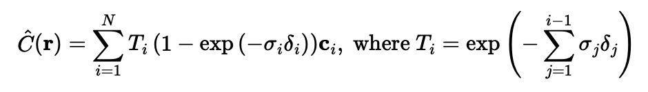
Here is a visualization of how points are sampled along the sampled rays.
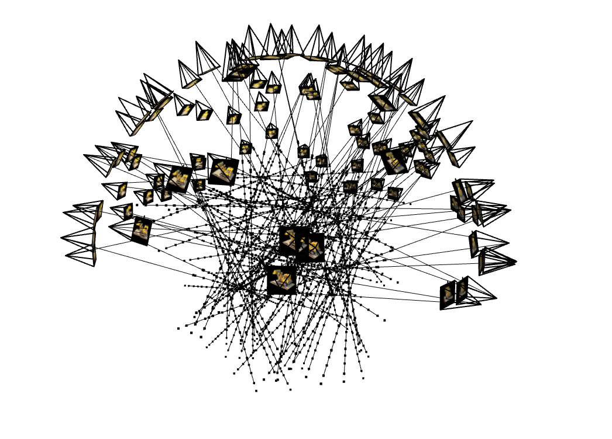
Below are the ground truth validation images alongside their corresponding predicted images at different training steps.